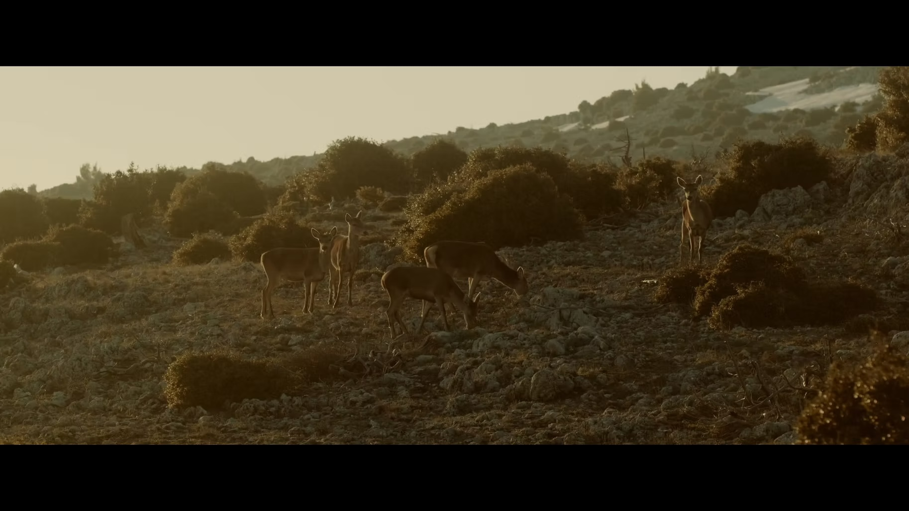

INDEPENDENT FILMMAKER & DIGITAL ARTIST
SELECTED WORKS / 2024—25

NR—001 / MOTION PICTURE
CO-DIRECTOR / SHORT FILM
TERRA NOVA.
A world at the edge of transformation.
PROJECT↗
IMAGE, MOTION & EXPERIMENT01 / 03
01 / SELECTED WORKFILM & MOVING IMAGE
Selected work.
A small selection of stories shaped through directing, editing and image-making.
02 / IN FOCUSPROJECT NOTES
SHORT FILM / 2024
Terra Nova
03 / ABOUTTHE PERSON BEHIND THE FRAMES
Between
image & idea.
I’m Nikolas Roumeliotis, a filmmaker, editor and creative technologist based in Athens.
My practice moves between short films, video editing, VFX and interactive media. I’m interested in the point where a story, an image and a new tool meet — and in how that encounter can make an audience feel part of the work.
I studied film directing at Stavrakos Film School and Prague Film School, and work with real-time tools including TouchDesigner, MadMapper, Unity and Arduino.
04 / CONTACTOPEN FOR COLLABORATIONS
HAVE A PROJECT IN MIND?
Let’s make
something move.
NIKOLASROUMELIOTIS@GMAIL.COM ↗
ATHENS, GREECEINSTAGRAM ↗